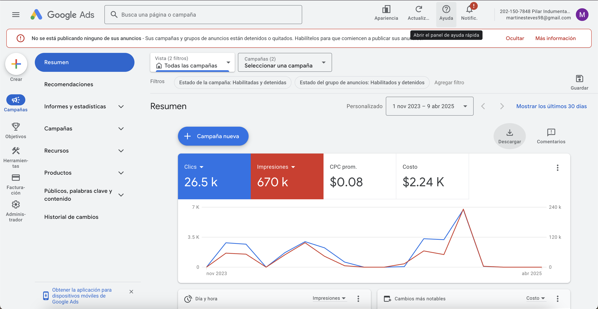

Google Ads
Optimización de campañas en red de búsqueda y display. Estos son algunos de los resultados más relevantes alcanzados:
- +670.000 impresiones totales.
- +25.000 clics a través de anuncios.
- CTR: 4,00% promedio.
- CPC: USD 0,08.
- Inversión total: USD 2.226,11.
Los anuncios se centraron en búsquedas estratégicas para captar clientes potenciales a bajo costo.

Marketing Digital, Meta
Diseño e implemento campañas digitales orientadas a resultados concretos. A través de estrategias en Meta Ads y optimización de contenido, logramos estos resultados:
- +625.000 visualizaciones en 28 días.
- +119.000 personas alcanzadas solo en Facebook.
- 709 conversaciones iniciadas con costo por conversación de $2,43.
- 213 contactos nuevos en una sola semana.
Estas campañas se enfocaron en interacción directa con los usuarios y generación de leads.